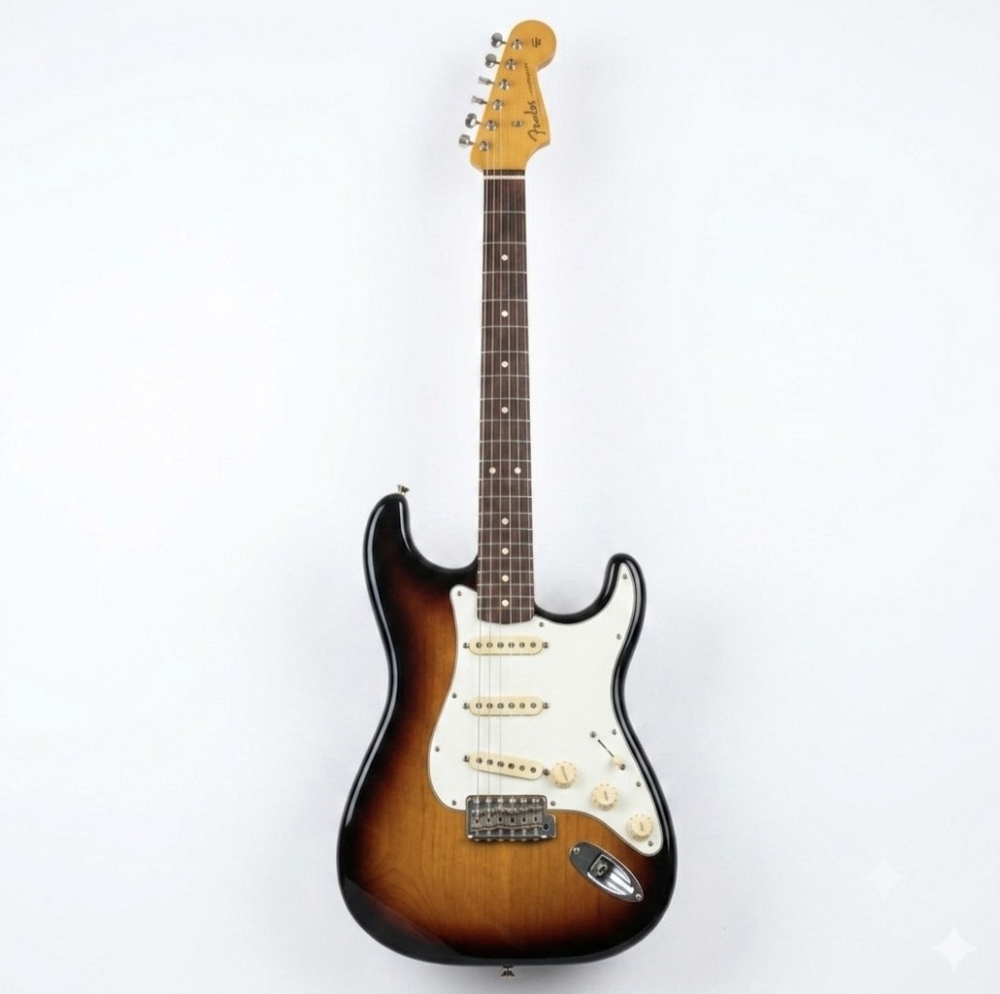
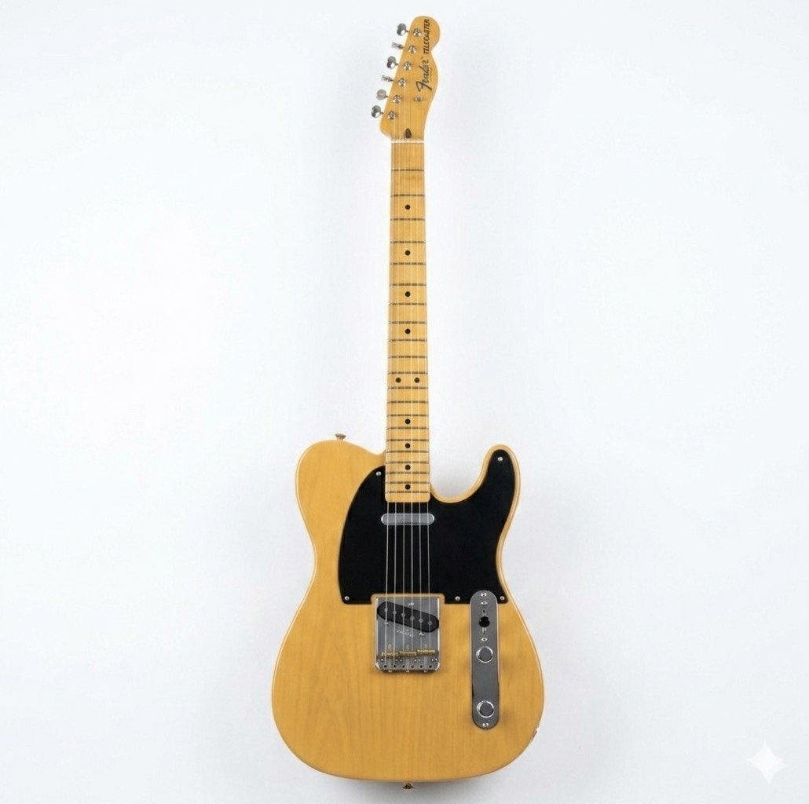
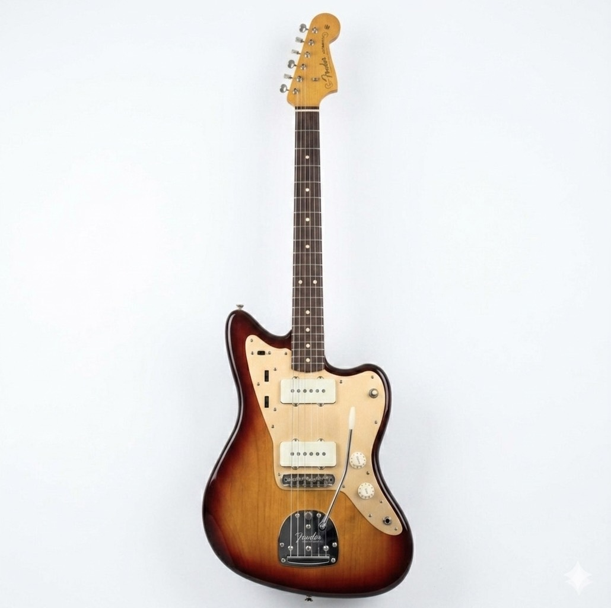

あなたに合うギターは… ストラトタイプ！ 万能なサウンド！クリアで明るい音軽量で弾きやすいあらゆるジャンルに対応 ギター図鑑サイトでストラトタイプの一覧を見てみよう！ ギター図鑑ページへ ※このギター適性診断はあくまでも参考です。ギター図鑑ページで色々なギターを見てみて自分のお気に入りの一本を探してみてください！ もう一度診断する ホーム画面へ
あなたに合うギターは… テレキャスタータイプ！ シンプルで力強い！歯切れの良い音ファンク・カントリーに最適頼もしい定番スタイル ギター図鑑サイトでテレキャスタータイプの一覧を見てみよう！ ギター図鑑ページへ ※このギター適性診断はあくまでも参考です。ギター図鑑ページで色々なギターを見てみて自分のお気に入りの一本を探してみてください！ もう一度診断する ホーム画面へ
あなたに合うギターは… レスポールタイプ！ 圧倒的主役感！重厚感のあるサウンド！高級感のある木目ロックの象徴 ギター図鑑サイトでレスポールタイプの一覧を見てみよう！ ギター図鑑ページへ ※このギター適性診断はあくまでも参考です。ギター図鑑ページで色々なギターを見てみて自分のお気に入りの一本を探してみてください！ もう一度診断する ホーム画面へ
あなたに合うギターは… SGタイプ！ 攻撃的なサウンド！圧倒的な軽さ！アグレッシブなルックスハードロックの定番 ギター図鑑サイトでSGタイプの一覧を見てみよう！ ギター図鑑ページへ ※このギター適性診断はあくまでも参考です。ギター図鑑ページで色々なギターを見てみて自分のお気に入りの一本を探してみてください！ もう一度診断する ホーム画面へ
あなたに合うギターは… ジャズマスタータイプ！ 個性的なスタイル！独特のルックスインディー・オルタナに人気唯一無二の存在感 ギター図鑑サイトでジャズマスタータイプの一覧を見てみよう！ ギター図鑑ページへ ※このギター適性診断はあくまでも参考です。ギター図鑑ページで色々なギターを見てみて自分のお気に入りの一本を探してみてください！ もう一度診断する ホーム画面へ
あなたに合うギターは… セミアコタイプ！ 温かみのある音！エレガントな外観ジャズ・ブルースに最適大人の余裕を演出 ギター図鑑サイトでセミアコタイプの一覧を見てみよう！ ギター図鑑ページへ ※このギター適性診断はあくまでも参考です。ギター図鑑ページで色々なギターを見てみて自分のお気に入りの一本を探してみてください！ もう一度診断する ホーム画面へ